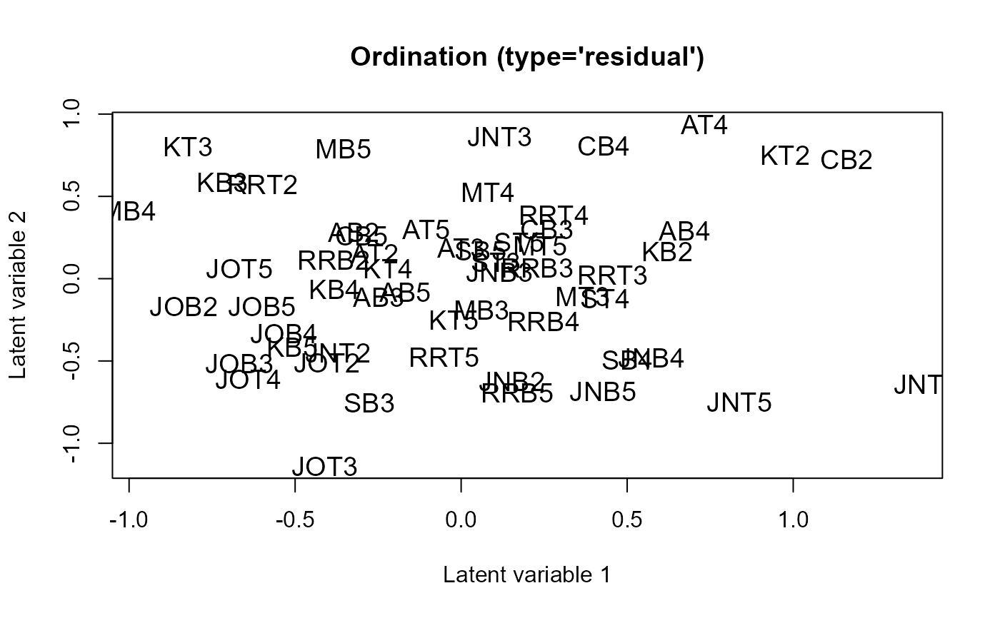
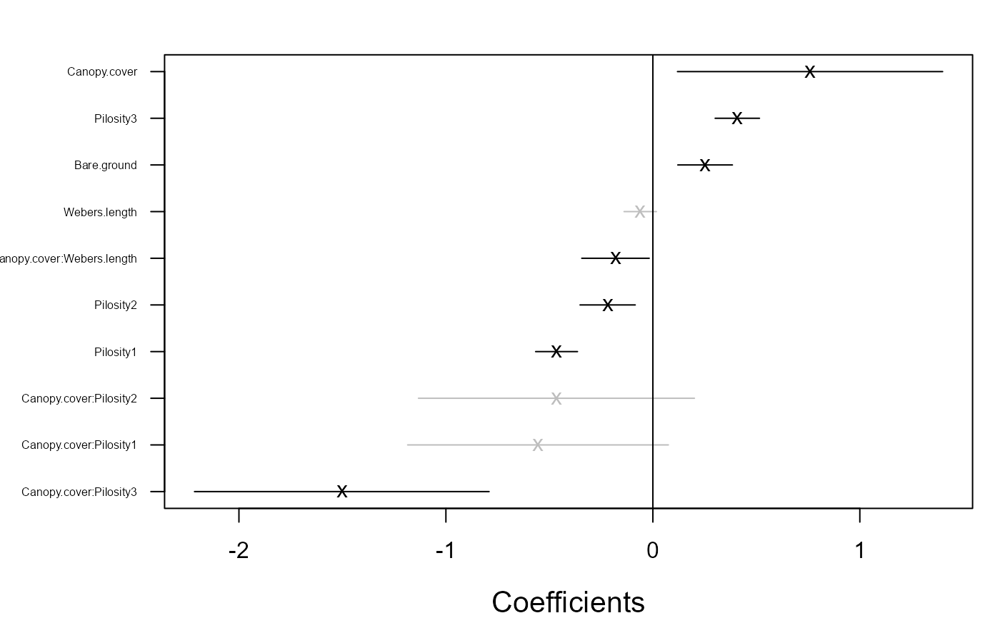

Fits generalized linear latent variable model for multivariate data. The model can be fitted using Laplace approximation method or variational approximation method.
gllvm( y = NULL, X = NULL, TR = NULL, data = NULL, formula = NULL, lv.formula = NULL, num.lv = NULL, num.lv.c = 0, num.RR = 0, family, row.eff = FALSE, offset = NULL, quadratic = FALSE, sd.errors = TRUE, method = "VA", randomX = NULL, dependent.row = FALSE, beta0com = FALSE, zeta.struc = "species", plot = FALSE, link = "probit", dist = 0, corWithin = FALSE, Power = 1.1, seed = NULL, scale.X = TRUE, return.terms = TRUE, gradient.check = FALSE, control = list(reltol = 1e-10, TMB = TRUE, optimizer = "optim", max.iter = 2000, maxit = 4000, trace = FALSE, optim.method = NULL), control.va = list(Lambda.struc = "unstructured", Ab.struct = "unstructured", diag.iter = 1, Ab.diag.iter = 0, Lambda.start = c(0.3, 0.3, 0.3)), control.start = list(starting.val = "res", n.init = 1, jitter.var = 0, start.fit = NULL, start.lvs = NULL, randomX.start = "zero", quad.start = 0.01, start.struc = "LV"), ... )
Arguments
| y | (n x m) matrix of responses. |
|---|---|
| X | matrix or data.frame of environmental covariates. |
| TR | matrix or data.frame of trait covariates. |
| data | data in long format, that is, matrix of responses, environmental and trait covariates and row index named as "id". When used, model needs to be defined using formula. This is alternative data input for y, X and TR. |
| formula | an object of class "formula" (or one that can be coerced to that class): a symbolic description of the model to be fitted (for fixed-effects predictors). |
| lv.formula | an object of class "formula" (or one that can be coerced to that class): a symbolic description of the model to be fitted (for latent variables). |
| num.lv | number of latent variables, d, in gllvm model. Non-negative integer, less than number of response variables (m). Defaults to 0. |
| num.lv.c | number of latent variables, d, in gllvm model to constrain, with residual term. Non-negative integer, less than number of response (m) and equal to, or less than, the number of predictor variables (k). Defaults to 0. Requires specification of "lv.formula" in combination with "X" or "datayx". Can be used in combination with num.lv and fixed-effects, but not with traits. |
| num.RR | number of latent variables, d, in gllvm model to constrain, without residual term (reduced rank regression). Cannot yet be combined with traits. |
| family | distribution function for responses. Options are |
| row.eff |
|
| offset | vector or matrix of offset terms. |
| quadratic | either |
| sd.errors | logical. If |
| method | model can be fitted using Laplace approximation method ( |
| randomX | formula for species specific random effects of environmental variables in fourth corner model. Defaults to |
| dependent.row | logical, whether or not random row effects are correlated (dependent) with the latent variables. Defaults to |
| beta0com | logical, if |
| zeta.struc | Structure for cut-offs in the ordinal model. Either "common", for the same cut-offs for all species, or "species" for species-specific cut-offs. For the latter, classes are arbitrary per species, each category per species needs to have at least one observations. Defaults to "species". |
| plot | logical, if |
| link | link function for binomial family if |
| dist | coordinates or time points used for row parameters correlation structure |
| corWithin | logical. If |
| Power | fixed power parameter in Tweedie model. Scalar from interval (1,2). Defaults to 1.1. |
| seed | a single seed value, defaults to |
| scale.X | if |
| return.terms | logical, if |
| gradient.check | logical, if |
| control | A list with the following arguments controlling the optimization:
|
| control.va | A list with the following arguments controlling the variational approximation method:
|
| control.start | A list with the following arguments controlling the starting values:
|
| ... | Not used. |
Value
An object of class "gllvm" includes the following components:
function call
log likelihood
latent variables
list of parameters
theta coefficients related to latent variables
LvXcoef Covariate coefficients related to constrained latent variables
beta0 column specific intercepts
Xcoef coefficients related to environmental covariates X
B coefficients in fourth corner model
row.params row-specific intercepts
phi dispersion parameters \(\phi\) for negative binomial or Tweedie family, probability of zero inflation for ZIP family, standard deviation for gaussian family or shape parameter for gamma family
inv.phi dispersion parameters \(1/\phi\) for negative binomial
power parameter \(\nu\) for Tweedie family
list of standard errors of parameters
list of prediction covariances for latent variables and variances for random row effects when method "LA" is used
covariance matrices for variational densities of latent variables and variances for random row effects
Details
Fits generalized linear latent variable models as in Hui et al. (2015 and 2017) and Niku et al. (2017). Method can be used with two types of latent variable models depending on covariates. If only site related environmental covariates are used, the expectation of response \(Y_{ij}\) is determined by
$$g(\mu_{ij}) = \eta_{ij} = \alpha_i + \beta_{0j} + x_i'\beta_j + u_i'\theta_j,$$
where \(g(.)\) is a known link function, \(u_i\) are \(d\)-variate latent variables (\(d\)<<\(m\)), \(\alpha_i\) is an optional row effect at site \(i\), and it can be fixed or random effect (also other structures are possible, see below), \(\beta_{0j}\) is an intercept term for species \(j\), \(\beta_j\) and \(\theta_j\) are column specific coefficients related to covariates and the latent variables, respectively.
Quadratic model
Alternatively, a more complex version of the model can be fitted with quadratic = TRUE, where species are modeled as a quadratic function of the latent variables:
$$g(\mu_{ij}) = \eta_{ij} = \alpha_i + \beta_{0j} + x_i'\beta_j + u_i'\theta_j - u_i' D_j u_i$$.
Here, D_j is a diagonal matrix of positive only quadratic coefficients, so that the model generates concave shapes only. This implementation follows
the ecological theoretical model where species are generally recognized to exhibit non-linear response curves.
For a model with quadratic responses, quadratic coefficients are assumed to be the same for all species: $$D_j = D$$. This model requires less information
per species and can be expected to be more applicable to most datasets. The quadratic coefficients D can be used to calculate the length of
ecological gradients.
For quadratic responses, it can be useful to provide the latent variables estimated with a GLLVM with linear responses, or estimated with (Detrended) Correspondence Analysis.
The latent variables can then be passed to the start.lvs argument inside the control.start list, which in many cases gives good results.
Constrained ordination
For GLLVMs with both linear and quadratic response model, the latent variable can be constrained to a series of covariates \(x_lv\):
$$g(\mu_{ij}) = \alpha_i + \beta_{0j} + x_i'\beta_j + (z_i+X_lv\beta_lv)' \gamma_j - (z_i+X_lv\beta_lv)' D_j (z_i+X_lv\beta_lv) + u_i'\theta_j - u_i' D_j u_i ,$$ where \(z_i+X_lv\beta_lv\) are constrained latent variables, which account for variation that can be explained by some covariates \(X_lv\) after accounting for the effects of covariates included in the fixed-effects part of the model \(X\), and \(u_i\) are unconstrained latent variables that account for any remaining residual variation.
Fourth corner model
An alternative model is the fourth corner model (Brown et al., 2014, Warton et al., 2015) which will be fitted if also trait covariates are included. The expectation of response \(Y_{ij}\) is
$$g(\mu_{ij}) = \alpha_i + \beta_{0j} + x_i'(\beta_x + b_j) + TR_j'\beta_t + vec(B)*kronecker(TR_j,X_i) + u_i'\theta_j - u_i'D_ju_i$$
where g(.), \(u_i\), \(\beta_{0j}\) and \(\theta_j\) are defined as above. Vectors \(\beta_x\) and \(\beta_t\) are the main effects or coefficients related to environmental and trait covariates, respectively, matrix \(B\) includes interaction terms. Vectors \(b_j\) are optional species-specific random slopes for environmental covariates. The interaction/fourth corner terms are optional as well as are the main effects of trait covariates.
Structured row effects
In addition to the site-specific random effects, \(\alpha_i\), it is also possible to set arbitrary structure/design for the row effects.
That is, assume that observations / rows \(i=1,...,n\) in the data matrix are from groups \(t=1,...,T\), so that each row \(i\) belongs to one of the groups, denote \(G(i) \in \{1,...,T\}\). Each group \(t\) has a number of observations \(n_t\), so that \(\sum_{t=1}^{T} n_t =n\).
Now we can set random intercept for each group \(t\), (see argument 'row.eff'):
$$g(\mu_{ij}) = \eta_{ij} = \alpha_{G(i)} + \beta_{0j} + x_i'\beta_j + u_i'\theta_j,$$
There is also a possibility to set correlation structure for the random intercepts between groups, so that \((\alpha_{1},...,\alpha_{T})^\top \sim N(0, \Sigma_r)\). That might be the case, for example, when the groups are spatially or temporally dependent.
Another option is to set row specific random intercepts \(\alpha_i\), but to set the correlation structure for the observations within groups, (see argument 'corWithin'). That is, we can set \(corr(\alpha_{i},\alpha_{i'}) = C(i,i') \neq 0\) according to some correlation function \(C\), when \(G(i)=G(i')\).
This model is restricted to the case, where each group has equal number of observations (rows), that is \(n_t=n_{t'}\) for all \(t,t' \in \{1,...,T\}\).
The correlation structures available in the package are
corAR1autoregressive process of order 1.corExpexponentially decaying, see argument 'dist'.corCScompound symmetry.
Starting values
The method is sensitive for the choices of initial values of the latent variables. Therefore it is
recommendable to use multiple runs and pick up the one giving the highest log-likelihood value (see argument 'n.init').
However, sometimes this is computationally too demanding, and default option
starting.val = "res" is recommended. For more details on different starting value methods, see Niku et al., (2018).
Models are implemented using TMB (Kristensen et al., 2015) applied to variational approximation (Hui et al., 2017), extended variational approximation (Korhonen et al., 2021) and Laplace approximation (Niku et al., 2017).
With ordinal family response classes must start from 0 or 1.
Distributions
Mean and variance for distributions are defined as follows.
For count data
family = poisson(): Expectation \(E[Y_{ij}] = \mu_{ij}\), variance \(V(\mu_{ij}) = \mu_{ij}\), orfamily = "negative.binomial": Expectation \(E[Y_{ij}] = \mu_{ij}\), variance \(V(\mu_{ij}) = \mu_{ij}+\mu_{ij}^2\phi_j\), orfamily = "ZIP": Expectation \(E[Y_{ij}] = (1-p)\mu_{ij}\), variance \(V(\mu_{ij}) = \mu_{ij}(1-p)(1+\mu_{ij}p)\).For binary data
family = binomial(): Expectation \(E[Y_{ij}] = \mu_{ij}\), variance \(V(\mu_{ij}) = \mu_{ij}(1-\mu_{ij})\).For percent cover data \(0 < Y_{ij} < 1\)
family = "beta": Expectation \(E[Y_{ij}] = \mu_{ij}\), variance \(V(\mu_{ij}) = \mu_{ij}(1-\mu_{ij})//(1+\phi_j)\).For positive continuous data
family = "gamma":Expectation \(E[Y_{ij}] = \mu_{ij}\), variance \(V(\mu_{ij}) = \mu_{ij}^2/\phi_j\), where \(\phi_j\) is species specific shape parameter.For non-negative continuous data
family = "exponential":Expectation \(E[Y_{ij}] = \mu_{ij}\), variance \(V(\mu_{ij}) = \mu_{ij}^2\).For non-negative continuous or biomass data
family = "tweedie"Expectation \(E[Y_{ij}] = \mu_{ij}\), variance \(V(\mu_{ij}) = \phi_j*\mu_{ij}^\nu\), where \(\nu\) is a power parameter of Tweedie distribution. See details Dunn and Smyth (2005).For ordinal data
family = "ordinal": Cumulative probit model, see Hui et.al. (2016).For normal distributed data
family = gaussian(): Expectation \(E[Y_{ij}] = \mu_{ij}\), variance \(V(y_{ij}) = \phi_j^2.\)
Note
If function gives warning: 'In f(x, order = 0) : value out of range in 'lgamma'', optimizer have visited an area where gradients become too big. It is automatically fixed by trying another step in the optimization process, and can be ignored if errors do not occur.
References
Brown, A. M., Warton, D. I., Andrew, N. R., Binns, M., Cassis, G., and Gibb, H. (2014). The fourth-corner solution - using predictive models to understand how species traits interact with the environment. Methods in Ecology and Evolution, 5:344-352.
Dunn, P. K. and Smyth, G. K. (2005). Series evaluation of tweedie exponential dispersion model densities. Statistics and Computing, 15:267-280.
Hui, F. K. C., Taskinen, S., Pledger, S., Foster, S. D., and Warton, D. I. (2015). Model-based approaches to unconstrained ordination. Methods in Ecology and Evolution, 6:399-411.
Hui, F. K. C., Warton, D., Ormerod, J., Haapaniemi, V., and Taskinen, S. (2017). Variational approximations for generalized linear latent variable models. Journal of Computational and Graphical Statistics. Journal of Computational and Graphical Statistics, 26:35-43.
Kasper Kristensen, Anders Nielsen, Casper W. Berg, Hans Skaug, Bradley M. Bell (2016). TMB: Automatic Differentiation and Laplace Approximation. Journal of Statistical Software, 70(5), 1-21.
Korhonen, P., Hui, F. K. C., Niku, J., and Taskinen, S. (2021). Fast, universal estimation of latent variable models using extended variational approximations. Submitted.
Niku, J., Warton, D. I., Hui, F. K. C., and Taskinen, S. (2017). Generalized linear latent variable models for multivariate count and biomass data in ecology. Journal of Agricultural, Biological, and Environmental Statistics, 22:498-522.
Niku, J., Brooks, W., Herliansyah, R., Hui, F. K. C., Taskinen, S., and Warton, D. I. (2018). Efficient estimation of generalized linear latent variable models. PLoS One, 14(5):1-20.
Warton, D. I., Guillaume Blanchet, F., O'Hara, R. B., Ovaskainen, O., Taskinen, S., Walker, S. C. and Hui, F. K. C. (2015). So many variables: Joint modeling in community ecology. Trends in Ecology & Evolution, 30:766-779.
See also
Author
Jenni Niku <jenni.m.e.niku@jyu.fi>, Wesley Brooks, Riki Herliansyah, Francis K.C. Hui, Sara Taskinen, David I. Warton, Bert van der Veen
Examples
# Extract subset of the microbial data to be used as an example data(microbialdata) X <- microbialdata$Xenv y <- microbialdata$Y[, order(colMeans(microbialdata$Y > 0), decreasing = TRUE)[21:40]] fit <- gllvm(y, X, formula = ~ pH + Phosp, family = poisson()) fit$logL#> [1] -4017.074# \donttest{ ## Load a dataset from the mvabund package library(mvabund) data(antTraits) y <- as.matrix(antTraits$abund) X <- as.matrix(antTraits$env) TR <- antTraits$traits # Fit model with environmental covariates Bare.ground and Shrub.cover fit <- gllvm(y, X, formula = ~ Bare.ground + Shrub.cover, family = poisson()) ordiplot(fit) coefplot(fit)## Example 1: Fit model with two unconstrained latent variables # Using variational approximation: fitv0 <- gllvm(y, family = "negative.binomial", method = "VA") ordiplot(fitv0) plot(fitv0, mfrow = c(2,2))#> #> Call: #> gllvm(y = y, family = "negative.binomial", method = "VA") #> #> Family: negative.binomial #> #> AIC: 4274.259 AICc: 4324.413 BIC: 4502.654 LL: -1974.1 df: 163 #> #> Constrained LVs: 0 #> Reduced Ranks: 0 #> Unconstrained LVs: 2 #> Standard deviation of LVs: 6.5e-10 4.825e-08 #> #> Formula: ~ 1 #> LV formula: ~0 #>#> 2.5 % 97.5 % #> theta.LV1.1 -8.559807e-06 8.561098e-06 #> theta.LV1.2 -1.026828e-04 1.027793e-04 #> theta.LV1.3 1.000000e+00 1.000000e+00 #> theta.LV1.4 -4.049124e+00 -4.049124e+00 #> theta.LV1.5 2.807518e+00 2.807518e+00 #> theta.LV1.6 -4.926051e+00 -4.926051e+00 #> theta.LV1.7 1.064320e+01 1.064320e+01 #> theta.LV1.8 -1.000374e+01 -1.000374e+01 #> theta.LV1.9 -4.084877e-02 -4.084877e-02 #> theta.LV1.10 6.784236e-01 6.784236e-01 #> theta.LV1.11 2.153037e+00 2.153037e+00 #> theta.LV1.12 -2.676853e+00 -2.676853e+00 #> theta.LV1.13 7.948640e+00 7.948640e+00 #> theta.LV1.14 5.974534e+00 5.974534e+00 #> theta.LV1.15 -3.502991e-01 -3.502991e-01 #> theta.LV1.16 -1.248235e-02 -1.248235e-02 #> theta.LV1.17 -2.016163e+00 -2.016163e+00 #> theta.LV1.18 2.026289e+00 2.026289e+00 #> theta.LV1.19 2.283431e+00 2.283431e+00 #> theta.LV1.20 3.418918e+00 3.418918e+00 #> theta.LV1.21 -5.060265e-01 -5.060265e-01 #> theta.LV1.22 -3.557660e+00 -3.557660e+00 #> theta.LV1.23 -2.971996e+00 -2.971996e+00 #> theta.LV1.24 -5.165864e+00 -5.165864e+00 #> theta.LV1.25 2.008130e+00 2.008130e+00 #> theta.LV1.26 -2.235537e+00 -2.235537e+00 #> theta.LV1.27 3.404412e+00 3.404412e+00 #> theta.LV1.28 -2.181165e+00 -2.181165e+00 #> theta.LV1.29 -1.146442e-01 -1.146442e-01 #> theta.LV1.30 2.274720e+00 2.274720e+00 #> theta.LV1.31 1.729655e+00 1.729655e+00 #> theta.LV1.32 -4.184873e+00 -4.184873e+00 #> theta.LV1.33 -1.254221e-01 -1.254221e-01 #> theta.LV1.34 -7.674315e+00 -7.674315e+00 #> theta.LV1.35 1.280614e+00 1.280614e+00 #> theta.LV1.36 2.350545e+00 2.350545e+00 #> theta.LV1.37 -4.107431e+01 -4.107431e+01 #> theta.LV1.38 3.887665e+00 3.887665e+00 #> theta.LV1.39 -1.955253e+00 -1.955253e+00 #> theta.LV1.40 2.187698e+01 2.187698e+01 #> theta.LV1.41 5.880157e+00 5.880157e+00 #> theta.LV2.1 -1.359613e+00 -1.359613e+00 #> theta.LV2.2 -1.237633e+00 -1.237633e+00 #> theta.LV2.3 0.000000e+00 0.000000e+00 #> theta.LV2.4 1.000000e+00 1.000000e+00 #> theta.LV2.5 -7.466637e-02 -7.466637e-02 #> theta.LV2.6 2.246031e+00 2.246031e+00 #> theta.LV2.7 -6.454284e+00 -6.454284e+00 #> theta.LV2.8 1.359185e+00 1.359185e+00 #> theta.LV2.9 2.029447e+00 2.029447e+00 #> theta.LV2.10 5.534417e-01 5.534417e-01 #> theta.LV2.11 4.185678e-01 4.185678e-01 #> theta.LV2.12 -7.654251e+00 -7.654251e+00 #> theta.LV2.13 -5.796581e+00 -5.796581e+00 #> theta.LV2.14 -8.089598e-01 -8.089598e-01 #> theta.LV2.15 9.193673e+00 9.193673e+00 #> theta.LV2.16 3.347865e-01 3.347865e-01 #> theta.LV2.17 -3.970189e+00 -3.970189e+00 #> theta.LV2.18 -5.849696e+00 -5.849696e+00 #> theta.LV2.19 7.843957e-01 7.843957e-01 #> theta.LV2.20 3.093071e-01 3.093071e-01 #> theta.LV2.21 5.972038e+00 5.972038e+00 #> theta.LV2.22 2.370779e+00 2.370779e+00 #> theta.LV2.23 5.857110e-02 5.857110e-02 #> theta.LV2.24 -4.484593e+00 -4.484593e+00 #> theta.LV2.25 -5.956323e-02 -5.956323e-02 #> theta.LV2.26 8.621854e-01 8.621854e-01 #> theta.LV2.27 -7.277528e-01 -7.277528e-01 #> theta.LV2.28 -1.490357e+00 -1.490357e+00 #> theta.LV2.29 9.476559e+00 9.476559e+00 #> theta.LV2.30 2.278312e+00 2.278312e+00 #> theta.LV2.31 -9.016473e-01 -9.016473e-01 #> theta.LV2.32 1.598642e+00 1.598642e+00 #> theta.LV2.33 9.473302e+00 9.473302e+00 #> theta.LV2.34 2.124760e+00 2.124760e+00 #> theta.LV2.35 -9.135984e+00 -9.135984e+00 #> theta.LV2.36 -3.445547e-03 -3.445547e-03 #> theta.LV2.37 5.800343e-01 5.800343e-01 #> theta.LV2.38 4.797402e+00 4.797402e+00 #> theta.LV2.39 2.957744e+00 2.957744e+00 #> theta.LV2.40 6.389521e+00 6.389521e+00 #> theta.LV2.41 -3.517090e+00 -3.517090e+00 #> sigma.LV1 -8.123442e+00 -8.123442e+00 #> sigma.LV2 1.644044e+00 1.644044e+00 #> Intercept.Amblyopone.australis -6.286182e-01 -6.286182e-01 #> Intercept.Aphaenogaster.longiceps 7.096945e-01 7.096945e-01 #> Intercept.Camponotus.cinereus.amperei -1.791786e+00 -1.791786e+00 #> Intercept.Camponotus.claripes 6.592484e-01 6.592484e-01 #> Intercept.Camponotus.consobrinus 1.667812e+00 1.667812e+00 #> Intercept.Camponotus.nigriceps -1.430798e-01 -1.430798e-01 #> Intercept.Camponotus.nigroaeneus -4.054952e-01 -4.054952e-01 #> Intercept.Cardiocondyla.nuda.atalanta -6.931467e-01 -6.931467e-01 #> Intercept.Crematogaster.sp..A -5.679817e-01 -5.679817e-01 #> Intercept.Heteroponera.sp..A 1.402832e+00 1.402832e+00 #> Intercept.Iridomyrmex.bicknelli 1.673985e+00 1.673985e+00 #> Intercept.Iridomyrmex.dromus -5.108332e-01 -5.108332e-01 #> Intercept.Iridomyrmex.mjobergi 1.458568e+00 1.458568e+00 #> Intercept.Iridomyrmex.purpureus 7.096828e-01 7.096828e-01 #> Intercept.Iridomyrmex.rufoniger 2.587790e+00 2.587790e+00 #> Intercept.Iridomyrmex.suchieri 7.576932e-01 7.576932e-01 #> Intercept.Iridomyrmex.suchieroides -1.053560e-01 -1.053560e-01 #> Intercept.Melophorus.sp..E -1.098636e+00 -1.098636e+00 #> Intercept.Melophorus.sp..F 7.577092e-01 7.577092e-01 #> Intercept.Melophorus.sp..H -1.053827e-01 -1.053827e-01 #> Intercept.Meranoplus.sp..A 2.877185e-01 2.877185e-01 #> Intercept.Monomorium.leae 1.554633e+00 1.554633e+00 #> Intercept.Monomorium.rothsteini 1.233553e+00 1.233553e+00 #> Intercept.Monomorium.sydneyense 1.541372e-01 1.541372e-01 #> Intercept.Myrmecia.pilosula.complex -9.162690e-01 -9.162690e-01 #> Intercept.Notoncus.capitatus -4.567467e-01 -4.567467e-01 #> Intercept.Notoncus.ectatommoides 1.064694e+00 1.064694e+00 #> Intercept.Nylanderia.sp..A 1.317301e+00 1.317301e+00 #> Intercept.Ochetellus.glaber -8.362382e-01 -8.362382e-01 #> Intercept.Paraparatrechina.sp..B -3.566995e-01 -3.566995e-01 #> Intercept.Pheidole.sp..A 2.406948e+00 2.406948e+00 #> Intercept.Pheidole.sp..B -5.679852e-01 -5.679852e-01 #> Intercept.Pheidole.sp..E 1.698678e+00 1.698678e+00 #> Intercept.Pheidole.sp..J -1.609472e+00 -1.609472e+00 #> Intercept.Polyrhachis.sp..A -1.204000e+00 -1.204000e+00 #> Intercept.Rhytidoponera.metallica.sp..A 2.116252e+00 2.116252e+00 #> Intercept.Rhytidoponera.sp..B 8.754408e-01 8.754408e-01 #> Intercept.Solenopsis.sp..A -2.014918e+00 -2.014918e+00 #> Intercept.Stigmacros.sp..A -3.393876e-02 -3.393876e-02 #> Intercept.Tapinoma.sp..A 9.295277e-01 9.295277e-01 #> Intercept.Tetramorium.sp..A 6.591983e-01 6.591983e-01 #> inv.phi.Amblyopone.australis 3.463184e-01 3.463184e-01 #> inv.phi.Aphaenogaster.longiceps 3.683457e-02 3.683457e-02 #> inv.phi.Camponotus.cinereus.amperei 5.275887e-01 5.275887e-01 #> inv.phi.Camponotus.claripes 5.898272e-01 5.898272e-01 #> inv.phi.Camponotus.consobrinus 7.243294e-01 7.243294e-01 #> inv.phi.Camponotus.nigriceps 1.400222e-01 1.400222e-01 #> inv.phi.Camponotus.nigroaeneus 4.155421e-01 4.155421e-01 #> inv.phi.Cardiocondyla.nuda.atalanta 6.724015e-02 6.724015e-02 #> inv.phi.Crematogaster.sp..A 9.297578e-02 9.297578e-02 #> inv.phi.Heteroponera.sp..A 8.883178e-01 8.883178e-01 #> inv.phi.Iridomyrmex.bicknelli 7.879137e-01 7.879137e-01 #> inv.phi.Iridomyrmex.dromus 1.900304e-01 1.900304e-01 #> inv.phi.Iridomyrmex.mjobergi 1.258667e+00 1.258667e+00 #> inv.phi.Iridomyrmex.purpureus 1.276568e-01 1.276568e-01 #> inv.phi.Iridomyrmex.rufoniger 1.618122e+00 1.618122e+00 #> inv.phi.Iridomyrmex.suchieri 5.463727e-01 5.463727e-01 #> inv.phi.Iridomyrmex.suchieroides 9.972228e-01 9.972228e-01 #> inv.phi.Melophorus.sp..E 6.196455e-01 6.196455e-01 #> inv.phi.Melophorus.sp..F 1.007397e+00 1.007397e+00 #> inv.phi.Melophorus.sp..H 6.381829e-01 6.381829e-01 #> inv.phi.Meranoplus.sp..A 1.687027e-01 1.687027e-01 #> inv.phi.Monomorium.leae 6.623458e-01 6.623458e-01 #> inv.phi.Monomorium.rothsteini 3.901495e-01 3.901495e-01 #> inv.phi.Monomorium.sydneyense 2.614491e-01 2.614491e-01 #> inv.phi.Myrmecia.pilosula.complex 3.975925e-01 3.975925e-01 #> inv.phi.Notoncus.capitatus 1.269962e-01 1.269962e-01 #> inv.phi.Notoncus.ectatommoides 7.591662e-01 7.591662e-01 #> inv.phi.Nylanderia.sp..A 3.649155e-01 3.649155e-01 #> inv.phi.Ochetellus.glaber 1.924049e-01 1.924049e-01 #> inv.phi.Paraparatrechina.sp..B 5.586946e-02 5.586946e-02 #> inv.phi.Pheidole.sp..A 3.243127e+00 3.243127e+00 #> inv.phi.Pheidole.sp..B 1.914986e-01 1.914986e-01 #> inv.phi.Pheidole.sp..E 1.113459e+00 1.113459e+00 #> inv.phi.Pheidole.sp..J 2.229281e-01 2.229281e-01 #> inv.phi.Polyrhachis.sp..A 9.536347e+05 9.536347e+05 #> inv.phi.Rhytidoponera.metallica.sp..A 2.767528e+00 2.767528e+00 #> inv.phi.Rhytidoponera.sp..B 3.220756e-01 3.220756e-01 #> inv.phi.Solenopsis.sp..A 2.893584e+05 2.893584e+05 #> inv.phi.Stigmacros.sp..A 3.849303e-01 3.849303e-01 #> inv.phi.Tapinoma.sp..A 7.971158e-01 7.971158e-01 #> inv.phi.Tetramorium.sp..A 5.028644e-01 5.028644e-01## Example 1a: Fit model with two constrained latent variables and with # quadratic response model # We scale and centre the predictors to improve convergence fity1 <- gllvm(y, X = scale(X), family = "negative.binomial", num.lv.c=2, method="VA") ordiplot(fity1, biplot = TRUE) # Using Laplace approximation: (this line may take about 30 sec to run) fitl0 <- gllvm(y, family = "negative.binomial", method = "LA") ordiplot(fitl0) # Poisson family: fit.p <- gllvm(y, family = poisson(), method = "LA") ordiplot(fit.p)# Use poisson model as a starting parameters for ZIP-model, this line # may take few minutes to run fit.z <- gllvm(y, family = "ZIP", method = "LA", control.start = list(start.fit = fit.p)) ordiplot(fit.z) ## Example 2: gllvm with environmental variables # Fit model with two latent variables and all environmental covariates, fitvX <- gllvm(formula = y ~ X, family = "negative.binomial") ordiplot(fitvX, biplot = TRUE) coefplot(fitvX)# Fit model with environmental covariates Bare.ground and Shrub.cover fitvX2 <- gllvm(y, X, formula = ~ Bare.ground + Shrub.cover, family = "negative.binomial") ordiplot(fitvX2) coefplot(fitvX2)# Use 5 initial runs and pick the best one fitvX_5 <- gllvm(y, X, formula = ~ Bare.ground + Shrub.cover, family = "negative.binomial", control.start=list(n.init = 5, jitter.var = 0.1)) ordiplot(fitvX_5) coefplot(fitvX_5)## Example 3: Data in long format # Reshape data to long format: datalong <- reshape(data.frame(cbind(y,X)), direction = "long", varying = colnames(y), v.names = "y") head(datalong)#> Bare.ground Canopy.cover Shrub.cover Volume.lying.CWD Feral.mammal.dung #> 1.1 9.00 3.5 0.50 0.03253833 0.20 #> 2.1 6.00 0.0 0.00 0.01202944 0.65 #> 3.1 9.25 0.0 8.10 0.00804195 0.00 #> 4.1 23.25 0.0 0.25 0.00000000 0.20 #> 5.1 8.75 0.0 3.35 0.00993944 0.35 #> 6.1 32.25 0.0 0.00 0.03142221 1.00 #> time y id #> 1.1 1 0 1 #> 2.1 1 0 2 #> 3.1 1 0 3 #> 4.1 1 4 4 #> 5.1 1 2 5 #> 6.1 1 0 6fitvLong <- gllvm(data = datalong, formula = y ~ Bare.ground + Shrub.cover, family = "negative.binomial") ## Example 4: Fourth corner model # Fit fourth corner model with two latent variables fitF1 <- gllvm(y = y, X = X, TR = TR, family = "negative.binomial") coefplot(fitF1)# Fourth corner can be plotted also with next lines #fourth = fitF1$fourth.corner #library(lattice) #a = max( abs(fourth) ) #colort = colorRampPalette(c("blue","white","red")) #plot.4th = levelplot(t(as.matrix(fourth)), xlab = "Environmental Variables", # ylab = "Species traits", col.regions = colort(100), # at = seq( -a, a, length = 100), scales = list( x = list(rot = 45))) #print(plot.4th) # Specify model using formula fitF2 <- gllvm(y = y, X = X, TR = TR, formula = ~ Bare.ground + Canopy.cover * (Pilosity + Webers.length), family = "negative.binomial") ordiplot(fitF2)## Include species specific random slopes to the fourth corner model fitF3 <- gllvm(y = y, X = X, TR = TR, formula = ~ Bare.ground + Canopy.cover * (Pilosity + Webers.length), family = "negative.binomial", randomX = ~ Bare.ground + Canopy.cover, control.start = list(n.init = 3)) ordiplot(fitF3)## Example 5: Fit Tweedie model # Load coral data data(tikus) ycoral <- tikus$abund # Let's consider only years 1981 and 1983 ycoral <- ycoral[((tikus$x$time == 81) + (tikus$x$time == 83)) > 0, ] # Exclude species which have observed at less than 4 sites ycoral <- ycoral[-17, (colSums(ycoral > 0) > 4)] # Fit Tweedie model for coral data (this line may take few minutes to run) fit.twe <- gllvm(y = ycoral, family = "tweedie", method = "LA") ordiplot(fit.twe)## Example 6: Random row effects fitRand <- gllvm(y, family = "negative.binomial", row.eff = "random") ordiplot(fitRand, biplot = TRUE)# }